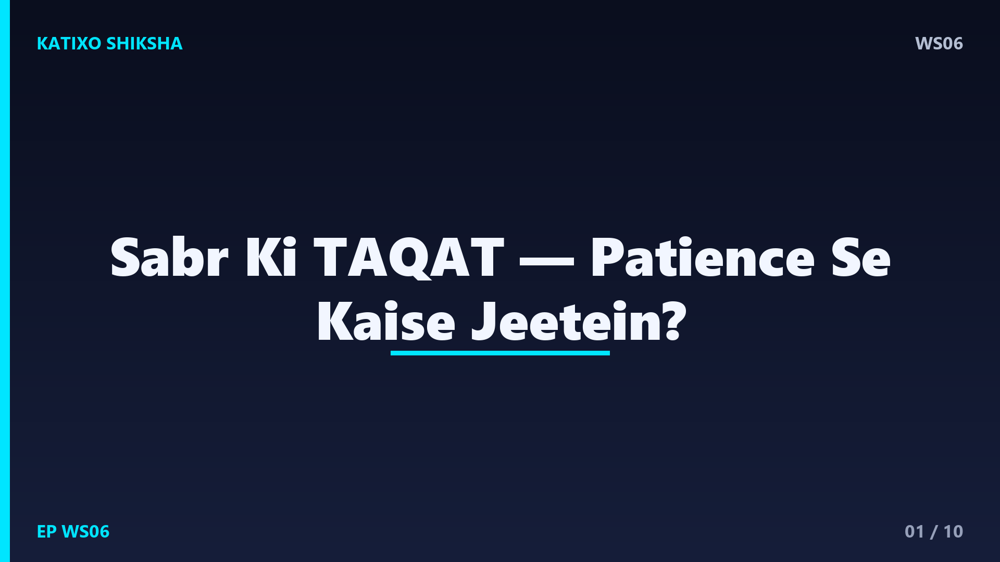
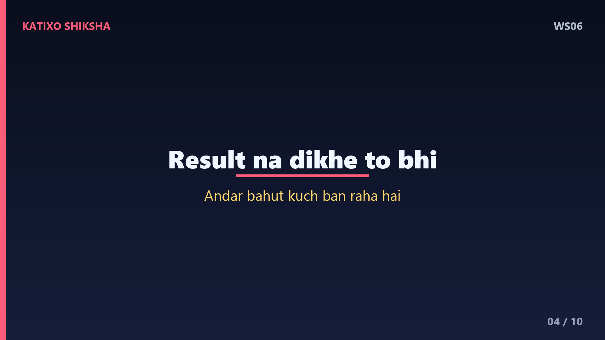
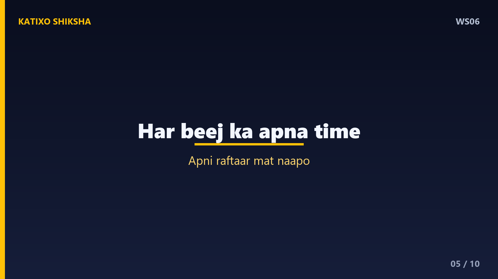
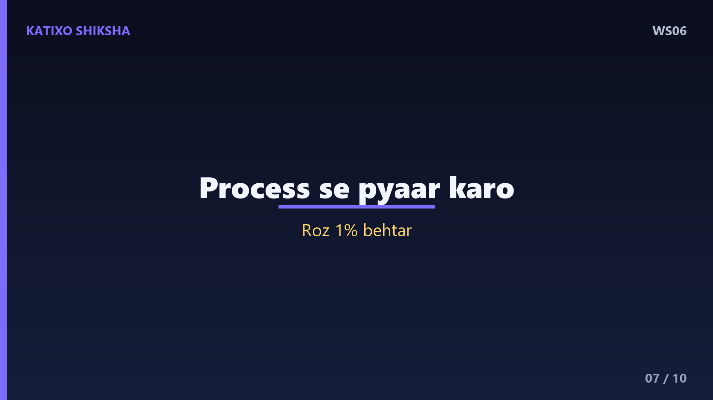

WS06 — Sabr Ki Taqat: Patience Se Kaise Jeetein?

Slide 1दोस्तों, क्या तुम्हें भी हर चीज़ तुरंत चाहिए? Result अभी, success अभी, reply अभी? और जब चीज़ें धीरे होती हैं, तो मन घबरा जाता है। Welcome to Katixo KhojLab. आज हम बात करेंगे एक ऐसी ताक़त की, जो दिखती नहीं पर सब कुछ बदल देती है — सब्र, यानी patience. ये कमज़ोरी नहीं, असली strength है। आज की कहानी में तुम सीखोगे कि धीरज रखने वाले लोग आख़िर में क्यों जीतते हैं। चलो शुरू करते हैं।
Slide 2एक गाँव में दो किसान थे — रमेश और सुरेश. दोनों ने एक ही दिन बाँस के बीज बोए। सुरेश रोज़ पानी देता और हर सुबह ज़मीन को घूरता — कुछ नहीं उगा। एक महीना, दो महीने, एक साल… कुछ नहीं। गुस्से में आकर सुरेश ने खेत छोड़ दिया और बोला — ये बेकार है। पर रमेश रुका नहीं। वो रोज़ पानी देता रहा, बिना किसी result के। लोग हँसते थे — पागल हो क्या, कुछ तो उग नहीं रहा।
Slide 3फिर पाँचवें साल कुछ अनोखा हुआ। रमेश का बाँस ज़मीन से निकला, और सिर्फ़ छह हफ़्तों में नब्बे फ़ीट ऊँचा हो गया। गाँव हैरान रह गया। लोग पूछने लगे — ये छह हफ़्तों में इतना बढ़ा कैसे? रमेश मुस्कुराया और बोला — ये छह हफ़्तों में नहीं, पाँच सालों में बढ़ा है। उन सालों में बाँस ज़मीन के नीचे अपनी जड़ें मज़बूत कर रहा था। बिना मज़बूत जड़ के, कोई पेड़ ऊँचा नहीं उठ सकता।

Slide 4Lesson नंबर एक — patience का मतलब बैठकर इंतज़ार करना नहीं है। इसका मतलब है — काम करते रहना, भले ही result दिख न रहा हो. बहुत सी मेहनत ज़मीन के नीचे होती है, जो किसी को दिखती नहीं. तुम्हारी पढ़ाई, तुम्हारी practice, तुम्हारी छोटी-छोटी कोशिशें — सब जड़ें बना रही हैं. इसलिए जब result न दिखे, तो ये मत सोचो कि कुछ नहीं हो रहा. अंदर ही अंदर, बहुत कुछ बन रहा होता है।

Slide 5Lesson नंबर दो — सब्र का सबसे बड़ा दुश्मन है comparison और जल्दबाज़ी. सुरेश इसलिए हारा क्योंकि उसने अपनी speed को दूसरों से नापा. हर बीज का अपना समय होता है — गुलाब तीन हफ़्ते में खिलता है, बाँस पाँच साल में. अगर तुम गुलाब से बाँस की तुलना करोगे, तो दोनों के साथ नाइंसाफ़ी होगी. तुम्हारी ज़िंदगी का भी अपना timing है. किसी और की रफ़्तार देखकर अपना रास्ता मत छोड़ो।
Slide 6अब एक practical technique — इसे कहते हैं the ten-minute rule. जब भी मन कहे कि अभी, इसी वक़्त चाहिए — चाहे कोई चीज़ ख़रीदनी हो, या गुस्से में reply करना हो — रुको और दस मिनट का इंतज़ार करो. इन दस मिनटों में दिमाग का impulsive हिस्सा शांत हो जाता है और सोचने वाला हिस्सा जाग जाता है. ये छोटी सी देरी तुम्हें बड़ी ग़लतियों से बचा लेती है. Patience कोई जादू नहीं — एक छोटी सी आदत है।

Slide 7Technique नंबर दो — process से प्यार करना सीखो, सिर्फ़ result से नहीं. अगर तुम सिर्फ़ मंज़िल देखोगे, तो हर कदम बोझ लगेगा. पर अगर तुम रोज़ के काम में मज़ा ढूँढना सीख गए — पढ़ने में, सीखने में, मेहनत में — तो इंतज़ार आसान हो जाएगा. Science कहती है कि जो लोग छोटी-छोटी progress को celebrate करते हैं, वो ज़्यादा देर तक टिकते हैं. हर रोज़ का एक percent improvement, एक साल में तुम्हें कई गुना बेहतर बना देता है।
Slide 8एक और गहरी बात — सब्र का मतलब दर्द को महसूस न करना नहीं है. रमेश को भी लोगों के ताने चुभते थे, उसे भी शक होता था. फ़र्क सिर्फ़ इतना था कि उसने अपने डर को अपना फ़ैसला नहीं बनने दिया. Patience का असली मतलब है — तकलीफ़ के बीच भी अपने रास्ते पर टिके रहना. Emotion आएँगे-जाएँगे, पर तुम्हारा commitment स्थिर रहना चाहिए. यही परिपक्वता है, यही असली ताक़त है।
Slide 9चलो आज की तीन सबसे बड़ी सीख याद कर लें. पहली — patience का मतलब रुकना नहीं, बल्कि result के बिना भी काम करते रहना है. दूसरी — अपनी रफ़्तार किसी और से मत नापो, हर किसी का अपना timing होता है. और तीसरी — जल्दबाज़ी में फ़ैसला लेने से पहले दस मिनट रुको, और process से प्यार करना सीखो. ये तीन बातें तुम्हें शांत भी रखेंगी और मज़बूत भी बनाएँगी।
Slide 10याद रखना दोस्तों — दुनिया तेज़ भागने वालों की नहीं, टिके रहने वालों की होती है. हर बड़ी चीज़ को बनने में समय लगता है — पेड़ को, इंसान को, और सपनों को भी. इसलिए घबराओ मत, अपनी जड़ें मज़बूत करते रहो. एक दिन तुम भी उस बाँस की तरह आसमान छुओगे. अगर ये कहानी तुम्हें पसंद आई, तो Like, share, aur Katixo KhojLab ko subscribe karna mat bhoolna. Milte hain agli kahani mein!